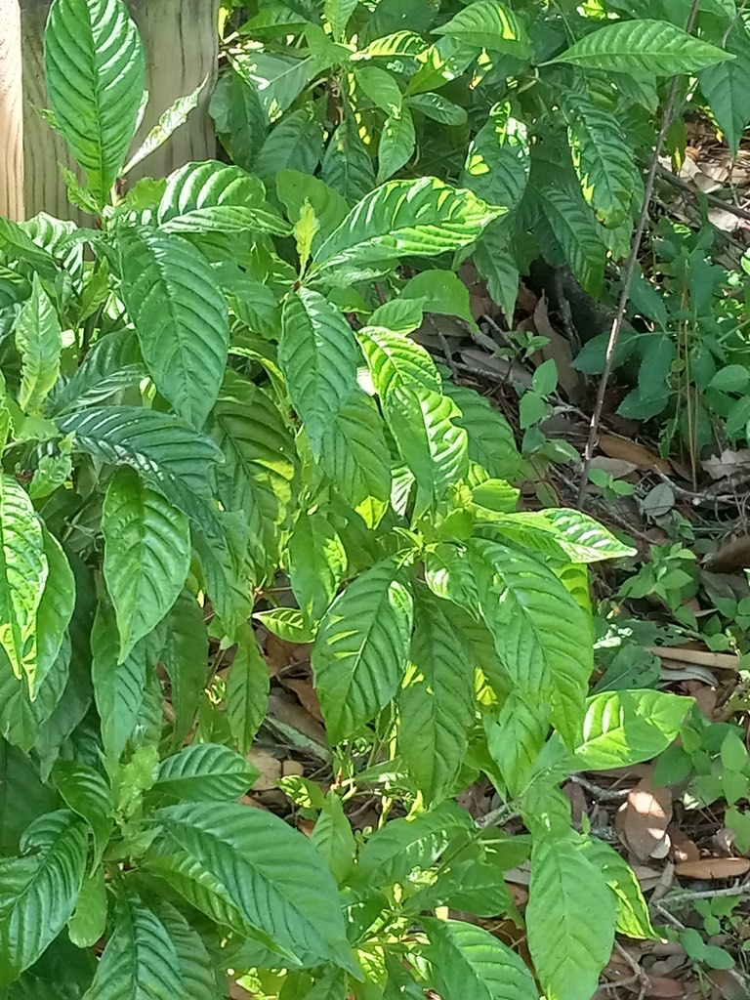

- A Florida native in the coffee family (Rubiaceae) — same family as coffee, Pentas, Firebush, and Ixora in the park collection — but not a source of true coffee. The small red fruits do contain caffeine in trace amounts, which is a family trait.
- One of the best native shrubs for Florida butterfly and wildlife gardens. The berries are eaten by at least 20 bird species. The flowers attract native bees and butterflies.
- Tolerates deep shade, which is unusual for a fruiting shrub. One of the few native plants that performs well under oak canopy.
- The glossy, deeply veined dark leaves are distinctive and attractive year-round.
- Early Florida pioneers occasionally roasted the berries as a coffee substitute. They quickly abandoned the practice — the resulting drink was notoriously bitter and caused severe headaches. The seeds are best left for the birds.
Native to South and Central Florida, the Caribbean, and Central America. Found naturally in hammock understory under live oak and other hardwoods. Member of Rubiaceae — the coffee family.
- At Palma Sola, Wild Coffee grows in the tangle between the gazebo and Palm Alley, tucked among the crotons. It shares that area with the Wild Lime — watch your step around those thorns. The spot is a bit wild back there, which suits it perfectly.
One of the most wildlife-productive native shrubs for Central and South Florida. At least 20 bird species eat the berries, including catbirds, mockingbirds, and thrushes. The flowers attract native bees, butterflies, and hummingbirds.
An important understory plant in the hammock community — tolerates the shade conditions under which most flowering shrubs fail.
Small, white, tubular, in clusters. Produced in spring and summer.
Small, round, red ripening to black. Two-seeded. Produced in clusters. Edible but not significant as a food plant.
Opposite, glossy dark green, with deeply impressed veins giving a quilted or corrugated appearance. This is the year-round ID feature.
Evergreen shrub, 4 to 15 feet, depending on light conditions. Shade-tolerant.
The deeply veined, glossy, corrugated-looking dark green leaves are distinctive year-round. No other common native Florida shrub has quite this leaf texture. Red to black berry clusters when fruiting.
The berries are technically edible and carry a trace of caffeine — a coffee-family trait — but they aren't typically eaten and this isn't a food plant.
It has no significant toxicity to people and isn't listed as toxic to dogs.

- © teschaim (CC-BY-NC), via iNaturalist